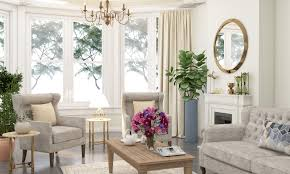
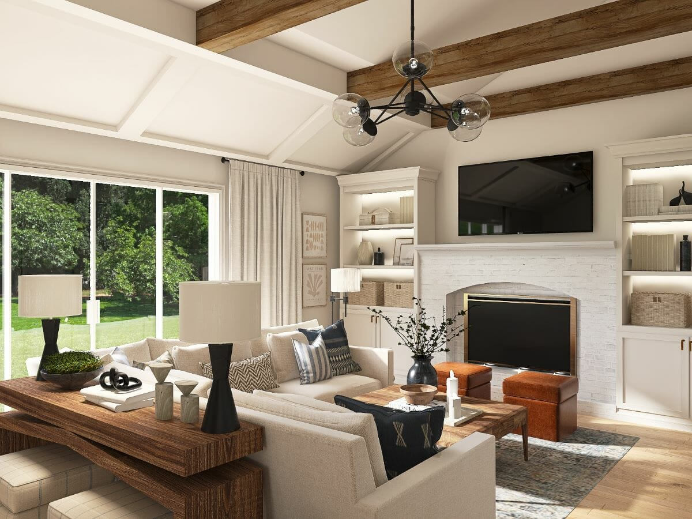
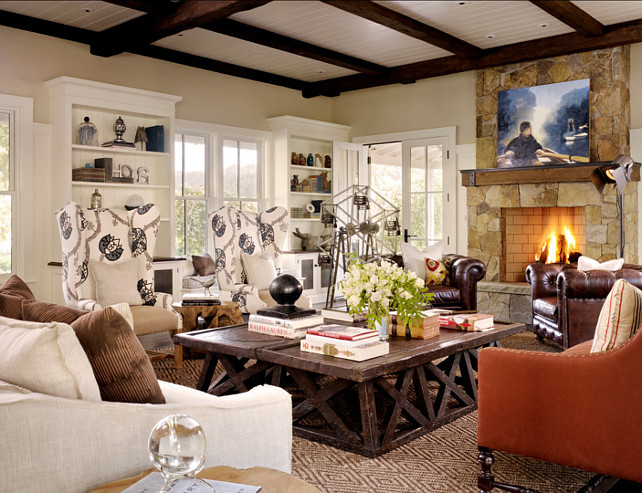
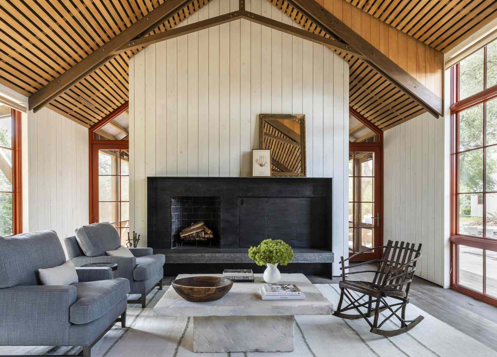
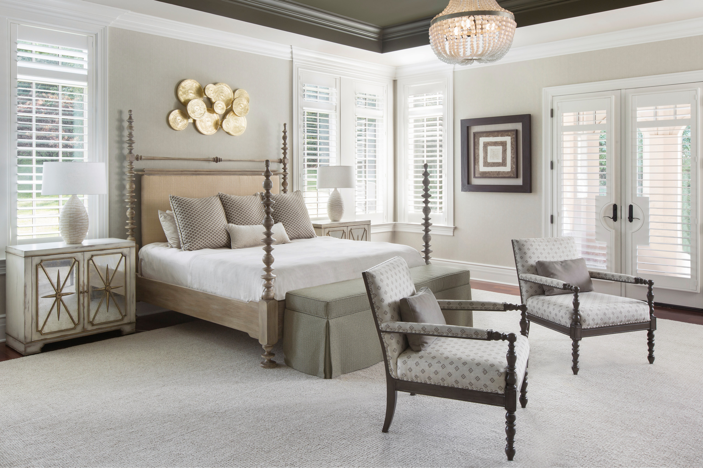
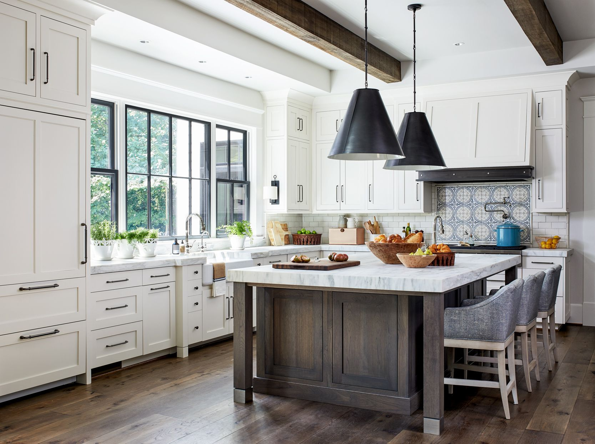

Transitional Interior Design Style
Our homes are continually undergoing inner transformations as our style changes. But now this dynamic “in between style” has become a style in its own right. The transitional interior design style is the ultimate mix between present and past favorites or classic and contemporary style. Therefore, if you’re an admirer of old and new styles but can’t choose between them, read on! Here are our ten top transitional style home must-haves!
Gallery
|  |  |  |
|  |  |  |